01 / MISSION BRIEFING
Recover the truth.
Or erase it.
Ghost Talon came to investigate unusual Necron and Tyranid activity. At Kappa-9, the investigation became a fight for access to the station itself.
The abandoned Imperial listening post offered more than shelter. Its communications records and central archive could explain what had been moving through this corner of the Nachmund Gauntlet. The T’au needed those records intact.
T-601’s force had a conflicting purpose. Under Kaelis Sovereign’s command, five Necron Warriors and four Immortals were operating to erase evidence of Necron activity. Where Ghost Talon sought answers, the Necrons intended to leave silence.
Campaign framing meets the recorded game: the four turning points and result follow the original battle report, published 1 August 2024. Ghost Talon and T-601’s mission provide the narrative setting; the tabletop mission was Loot and Salvage.
T’AU / RECONNAISSANCE
Ghost Talon
06 STEALTH SUITS
Hunter Cadre: two fire teams of three stealth suits. Five carry burst cannons; one carries a fusion blaster. Mobility and concealment will have to make up for their fewer activations.
NECRONS / ARCHIVE DENIAL
T-601’s kill team
09 NECRON CONSTRUCTS
Tomb World: five Warriors with gauss flayers; three Immortals with gauss blasters, including the leader; and one Immortal with a tesla carbine. Nine activations put pressure on the six-suit cadre.
02 / THE ENGAGEMENT
Four turning points.
No room for a wasted move.
Loot and Salvage sets six objectives across the listening post. Both players choose Recon; the Tomb World force deploys first, and wins the initiative roll that opens the game.

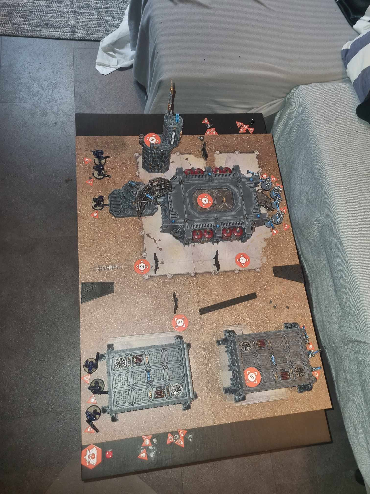
DEPLOYMENT / LOOT AND SALVAGE
The race for the station
The Necrons deploy mostly with Engage orders, concealing the operatives at the front of the advance. Ghost Talon answers with the reverse: most suits begin concealed, while those nearest the objectives prepare to act openly.
Every marker offers a reason to leave cover. The Vox tower holds objective six; the central landing pad overlooks objective four. The two bunker roofs will become the site of an expensive opening exchange.
In the campaign, this is the struggle for access to Kappa-9’s records. On the tabletop, the task is more immediate: secure objectives, preserve the operatives who can reach them, and keep scoring.
TURNING POINT 01 / INITIATIVE: NECRONS
IA costly opening
T-601’s force secures objectives one and four. Ghost Talon answers at two and six, a stealth suit flying onto the Vox tower to claim its elevated position.
A Warrior moves onto the bunker roof, threatening objective five. A burst-cannon suit opens fire and leaves it with three wounds. Another Warrior retaliates, reducing the exposed attacker to four wounds. Ghost Talon commits a second suit and brings the first Warrior down; the Necrons invoke Reanimation Protocols.
The commitment leaves both suits exposed. A gauss-blaster Immortal moves into position and takes one out of action. Another Immortal fires on the remaining rooftop suit, which ends the exchange on four wounds.
Near the tower, T’au reinforcements wound an advancing Warrior, but subsequent overwatch fire misses. The Necrons continue moving toward the tower and objective three. Ghost Talon has disrupted the push for five, at the cost of one suit and a second left in danger.


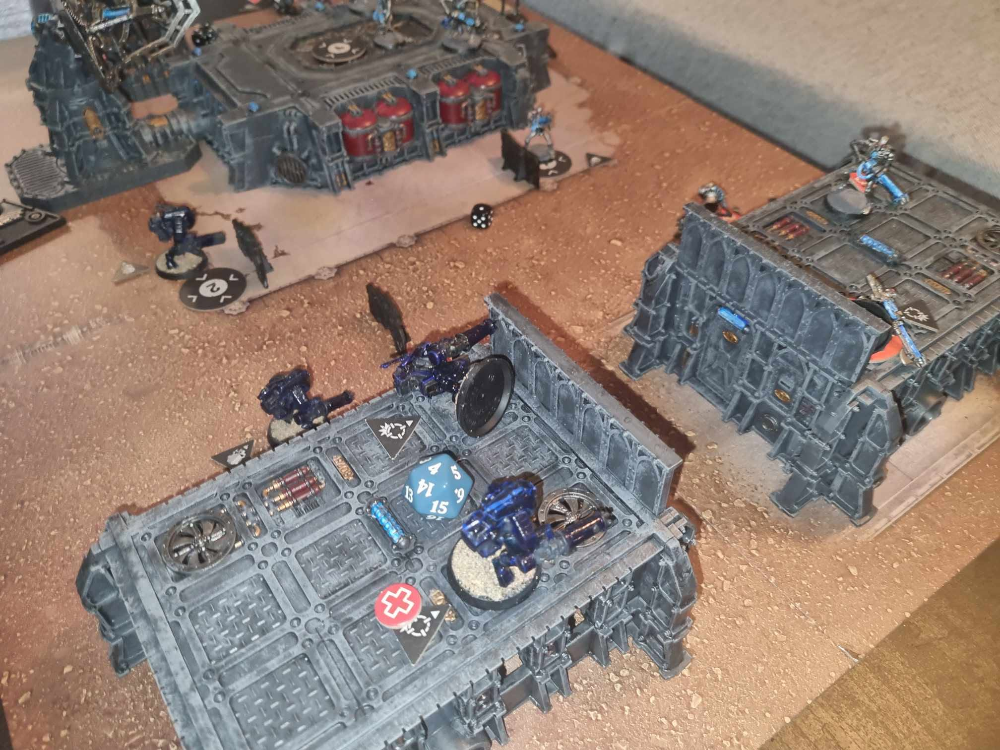

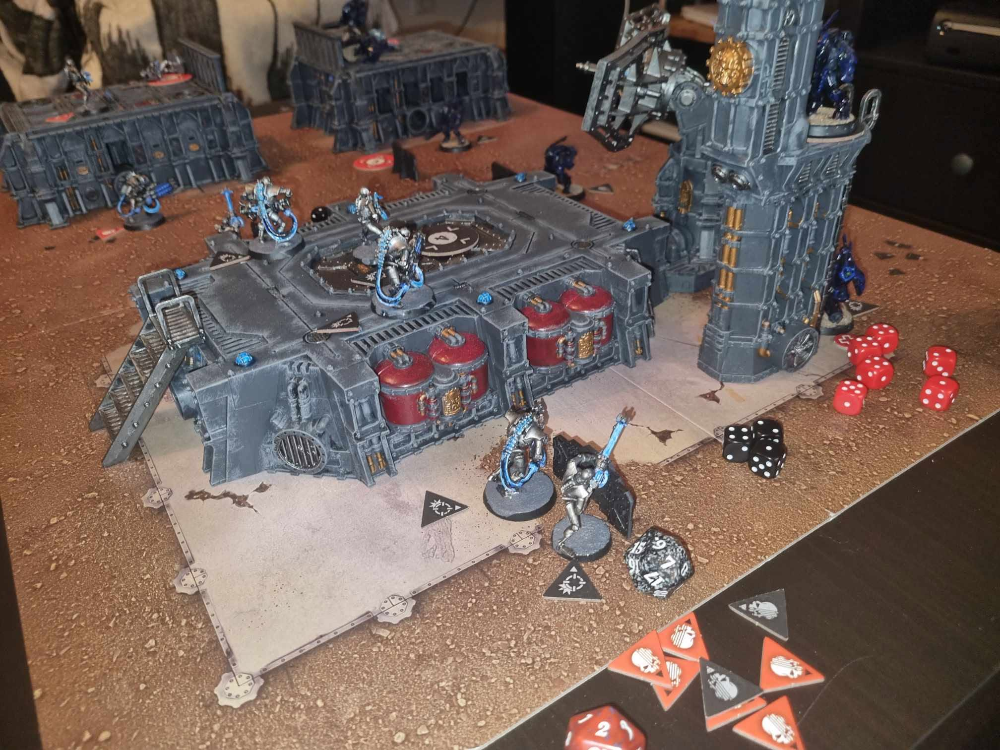
TURNING POINT 02 / INITIATIVE: NECRONS
IILive to score again
The downed Warrior fails its reanimation roll. Living Metal restores wounds to the damaged Necrons, and the Warrior at objective four opens the firefight with a devastating volley: three critical hits and one normal hit finish the surviving rooftop stealth suit.
Two suits lost. Ghost Talon changes its priorities. The tower operative conceals, secures objective six and begins withdrawing toward the surviving team. At objective two, another suit scores before falling back toward the barracks. The T’au leader takes a chance and secures objective three.
The Necrons keep building pressure. A Warrior claims objective five; another scores at one and advances toward two. The Immortal leader closes on the T’au commander, while a Warrior and Immortal head toward the tower.
With the surviving suits concealed or withdrawing, the later Necron activations find no legal shots. T-601’s numerical advantage buys ground, but Ghost Talon keeps its remaining operatives moving.

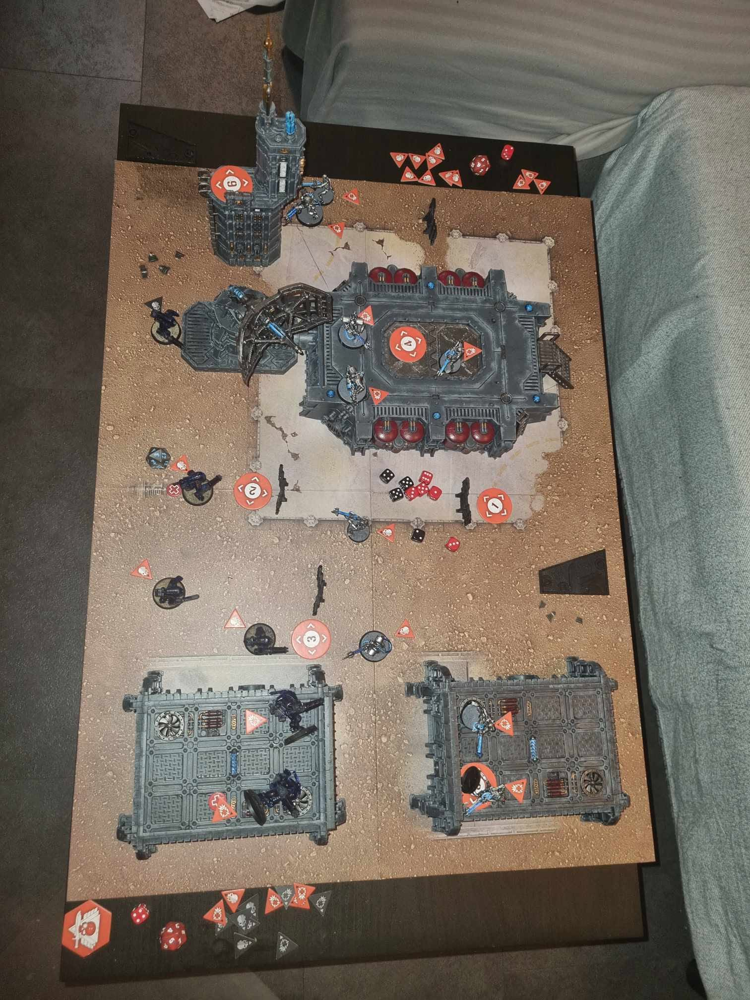

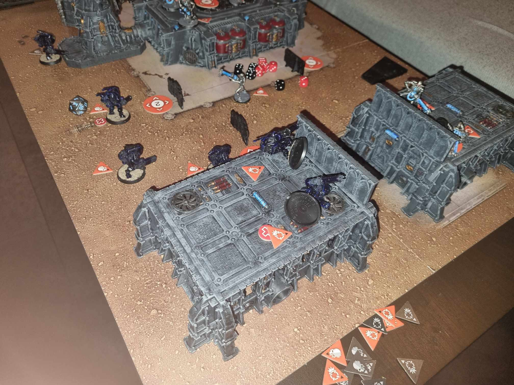

TURNING POINT 03 / INITIATIVE: T’AU
IIIBack to the tower
Ghost Talon wins initiative. The damaged Necron force benefits from Living Metal again, but the fallen Warrior still fails to reanimate. The T’au commander sends the former tower occupant back to objective six: concealed on that platform, it has a position the Necrons cannot readily shoot or charge.
The Immortal leader claims objective three, forcing the T’au leader away. Ghost Talon’s operative at two secures the marker and retreats toward the table edge. The leader escapes onto a bunker roof, beyond the Immortal’s charge range.
The fusion-blaster suit joins the leader on the roof, setting up an attack on objective five in the next turning point. Across the station, Warriors score again at four and five.
Necron reinforcements reach the tower ladder but have no legal target above them. Two Immortals advance toward objective two, while the Warrior that had pushed away from one returns to guard it. Both teams are arranging their last scoring opportunities.

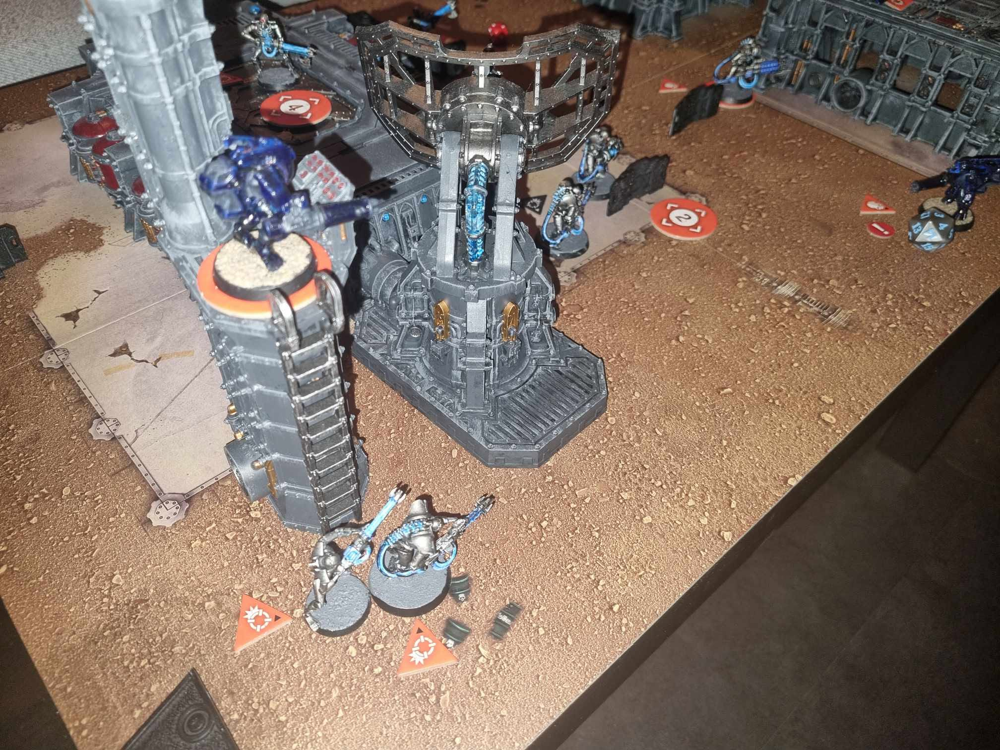

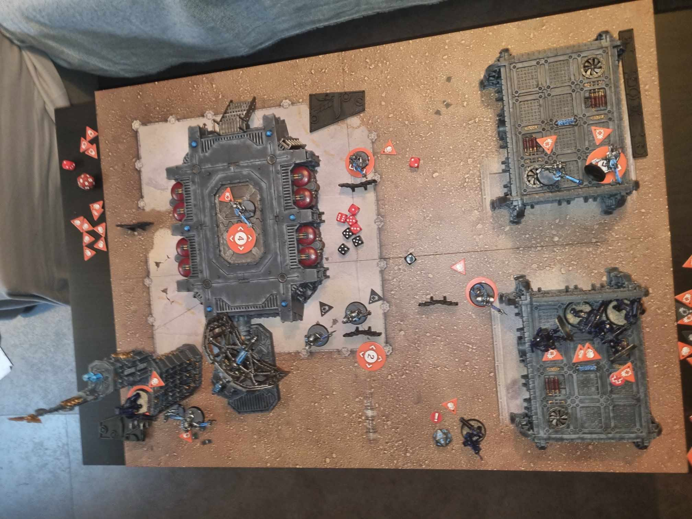

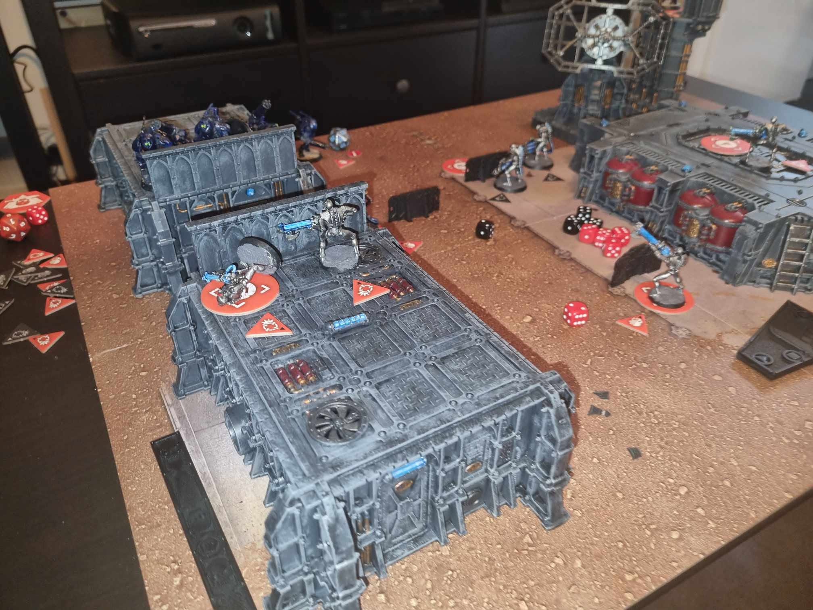
TURNING POINT 04 / INITIATIVE: T’AU
IVEverything left to play for
Ghost Talon keeps initiative. The fusion-blaster suit changes to Engage, destroys the Warrior on the opposite bunker roof and flies across to its victim’s position. The Warrior at objective four answers: it secures the marker, turns and shoots the fusion suit out of action.
A wounded stealth suit then slips in to steal objective two. An Immortal charges in retaliation, but fails to kill it. Up on the Vox tower, Ghost Talon’s operative switches to Engage, secures objective six and destroys the tesla-carbine Immortal.
The Necrons try to silence the tower. A gauss-blaster Immortal moves for a shot and misses. The T’au leader flies across to secure objective five. A Warrior also fires at the tower suit and misses; overwatch from above destroys another Immortal.
The Necron Warrior at objective one stays concealed and secures its marker. After four turning points, both forces have extracted the same value from the field: ten victory points apiece.

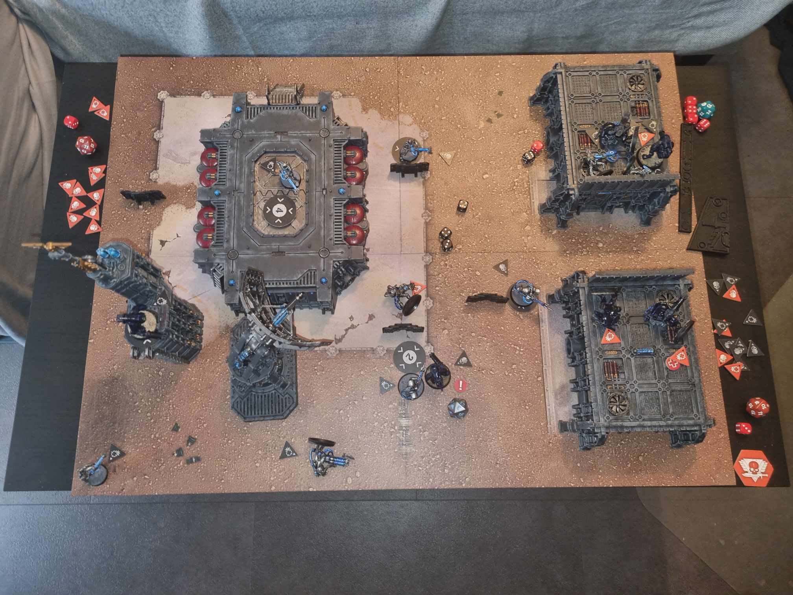

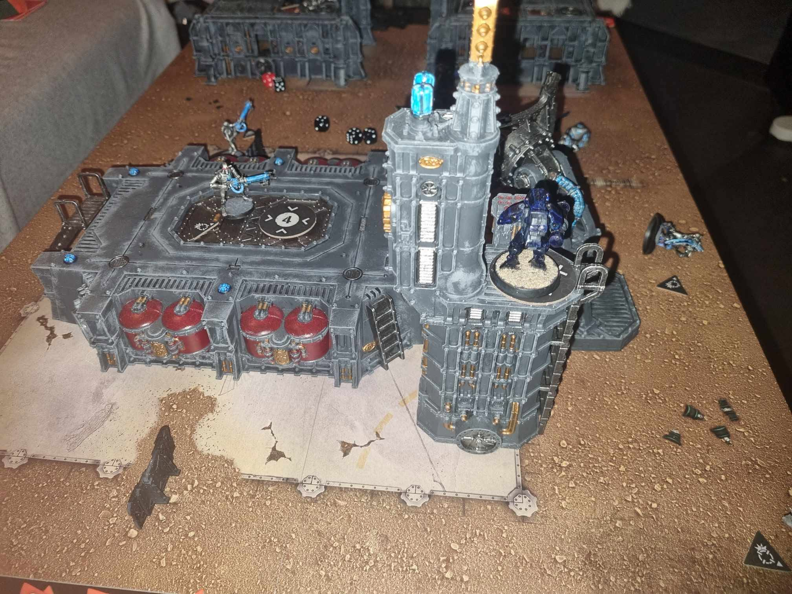

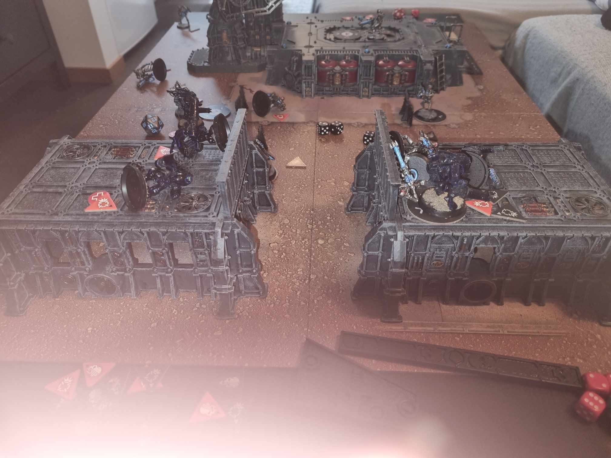
03 / THE RESULT
A draw, earned the hard way.
Neither force breaks the deadlock. Ghost Talon’s late objective grabs and tower fire keep the game level despite the early losses.
DRAW
NECRON MVP / OBJECTIVE FOUR
The landing-pad sentinel
The Warrior at objective four secures it every turning point and destroys two stealth suits, including the fusion-blaster operative in the final exchange. A single dependable scoring position anchors the Necron result.
T’AU MVP / OBJECTIVE SIX
The suit on the Vox tower
The tower operative denies the Necrons access to objective six for much of the game. Its final-turn burst cannon and overwatch destroy two Immortals at a crucial moment, helping turn survival into a draw.
From the tabletop · lessons from a first game
The original account describes an enjoyable but lengthy first game, with frequent rule lookups and mistakes that were walked back. Losing two suits early made the difference in available activations especially painful; concealment, movement and objective play became essential to the T’au recovery.
A rules mistake shaped the game. The author notes that Implacable March was misplayed: affected Necrons were allowed to secure objectives and Dash when they should not have been. The report records its use each turning point. This account preserves the game as played and its recorded 10–10 result, without attempting to calculate a corrected score.
04 / BEYOND THE FIREFIGHT
Other missions.
The same unanswered questions.
Ghost Talon and T-601 were not the only forces with business at Kappa-9. Reports also placed Tyranid organisms under Vasarius Biolex’s control in the area, pursuing a separate operation.
Aster Vale, adopted daughter of Inquisitor Shade al Serrion, led a Sisters of Silence kill team on a search for missing Sisters and evidence concerning a vanished Black Ship. Their mission brings another reason to preserve the listening post’s records.
Those operations frame the wider incident. The photographed engagement remains the clash between Ghost Talon and T-601’s Necrons.
The tabletop engagement ends in a draw. Whether either side uncovers the listening post’s deeper secrets remains a question for the campaign.
05 / PHOTOGRAPHIC RECORD
Further views from Kappa-9
Additional angles of the same battlefield. Select any photograph to inspect it at full size.

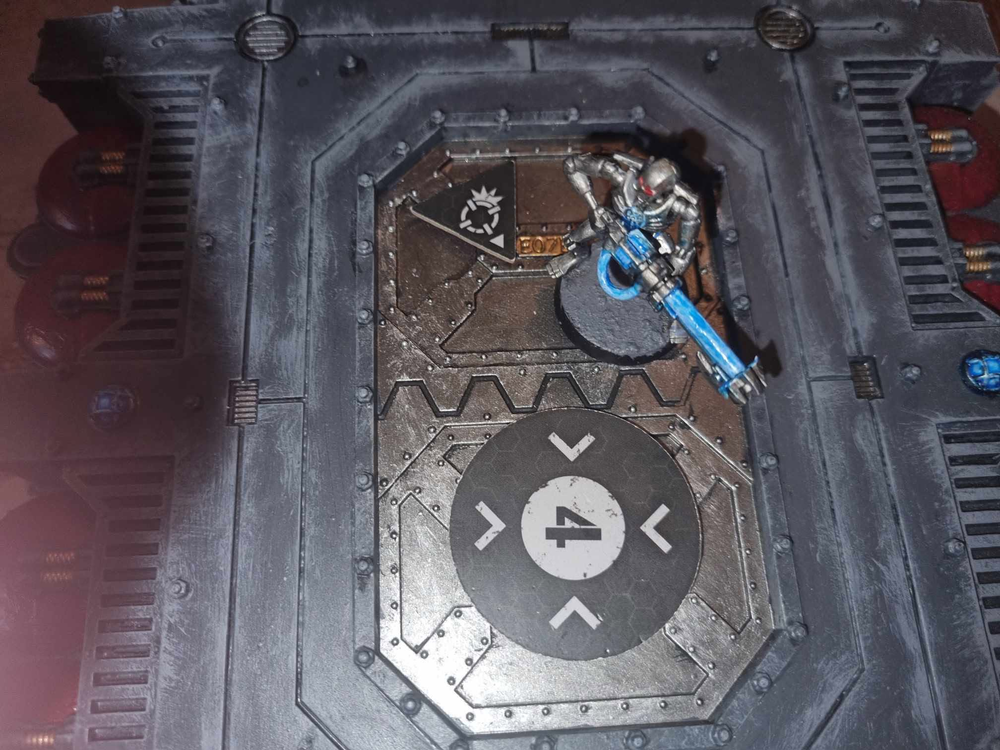

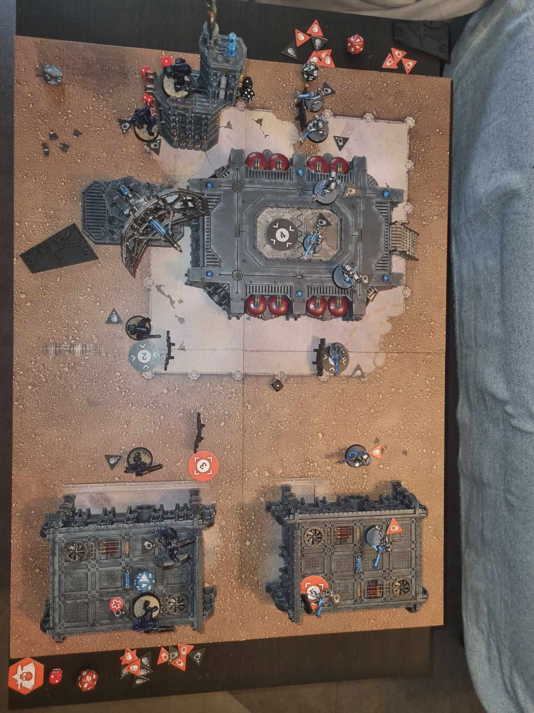